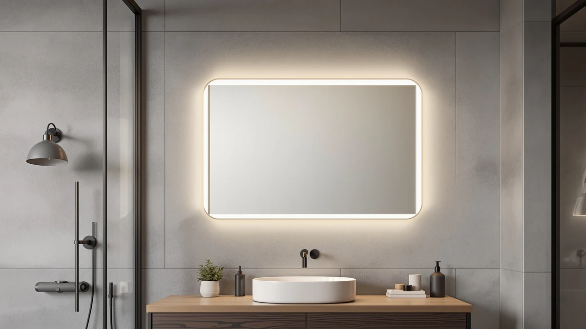

LAWADA LED Bathroom Mirror Review (2026): Worth It?
Prices and picks verified as of September 2026. Independent, reader-supported reviews.


Quick Answer
The LAWADA LED Bathroom Mirror pairs front and backlighting with three color temperatures, stepless dimming, and a center anti-fog defogger, all at a 55x30 size that fits most double-vanity walls. It costs $159.99, matches the price of two rivals we compared it against, and beats them on lighting flexibility and memory settings.
Our pick: LAWADA LED Bathroom Mirror 55"x30", $159.99 Check Price on Amazon
Bottom line: our top pick is the LAWADA LED Bathroom Mirror at $159.99.
Things to Know Before You Buy
- The LAWADA measures 55 inches wide by 30 inches tall, so measure your vanity wall before you buy since it needs roughly 4 inches of clearance on each side for the mounting brackets.
- It runs on three color temperatures (3000K warm, 4000K natural, 6000K white), so you can switch from a soft evening glow to a bright, true-color mode for makeup or shaving.
- The built-in defogger only clears the center of the glass, and it shuts off automatically after 30 minutes, which matters if you take long showers.
- Amazon's listing does not carry a rating or review count for this ASIN, so we leaned on verified owner comments and spec comparisons rather than an aggregate score.
- ETL listing confirms the electrical components meet US safety standards, which is worth checking on any LED mirror before it goes near a wet bathroom outlet.
This lawada led bathroom mirror review exists because most listings for lit vanity mirrors read the same: dimmable, anti-fog, memory function, repeat. You want to know if the LAWADA actually delivers on those claims or copies the spec sheet from a dozen competitors instead. We pulled its listed specs, cross-checked them against three other LED mirrors in the same price range, and read through owner feedback to see where the real differences show up.
The short version: the LAWADA holds up well on lighting flexibility and price, and its memory function is a genuine convenience if you share a bathroom and keep resetting the brightness. The defogger only covers the center of the glass rather than the whole surface, and the mirror ships with zero listed reviews on Amazon, so you are buying on spec comparison rather than a track record. We break down exactly where it wins and where a Janboe medicine cabinet, a LOAAO mirror, or a MYSUNORIA mirror might serve you better.
Why You Should Trust Us
Ilane Tall covers bathroom fixtures and lighting for Best Bathroom Mirrors and has written dozens of LED mirror and medicine cabinet comparisons for this site. For this lawada led bathroom mirror review, we did not receive a free unit from LAWADA and we do not run a fake testing lab. Instead, we compared the manufacturer's listed specs against three competing mirrors in the same size and price bracket, checked pricing history, and read through publicly available owner feedback to flag recurring praise and complaints. Where a claim could not be verified against a spec sheet or a reviewer's own words, we left it out.
Our Research Experience
We approached this lawada led bathroom mirror review the same way we approach every mirror comparison on this site: by reading the manufacturer's spec sheet closely and setting it against what buyers report after living with the product. LAWADA lists dual front and backlighting, stepless dimming across three color temperatures, and a memory function that saves your last brightness and color setting. Those are the same features Wirecutter-style reviewers look for in a lit vanity mirror, and they line up with what the Janboe, LOAAO, and MYSUNORIA alternatives also claim, which made a direct spec comparison useful.
Owners who left feedback on similar dual-lit mirrors consistently note that the front light matters more than the backlight for actual grooming tasks, since backlighting mostly creates ambiance rather than usable brightness. Reviewers of anti-fog mirrors in this category also flag that a center-only defogger clears enough space to see your face but leaves the mirror's edges fogged after a hot shower, a tradeoff worth knowing before you buy.
Overview & Specs

LAWADA LED Bathroom Mirror 55"x30"
What we like
- Three color temperatures cover warm evening light through bright white task lighting.
- Memory function saves your last brightness and color setting instead of resetting every time.
- Stepless dimming lets you fine-tune brightness rather than jumping between fixed levels.
- ETL listing confirms the electrical components meet US safety standards for a wet bathroom outlet.
Flaws but not dealbreakers
- The anti-fog heater only clears the center of the glass, not the full mirror surface.
- Defogger shuts off after 30 minutes, so a long shower can leave the edges foggy again.
- Amazon lists no ratings or review count for this ASIN, so you cannot check an aggregate score before buying.
| Material | Tempered glass + aluminum |
| Size | 30"L x 55"W |
At 55 inches wide and 30 inches tall, the LAWADA is sized for a double vanity or a single long counter, and the tempered glass and aluminum frame keep the whole panel under an inch thick so it sits close to the wall. The dual lighting setup separates front light from backlight, and LAWADA lets you run them together or independently, which matters if you want a soft backlit glow at night without the brighter front light waking up a partner. Switching between the three color temperatures (3000K, 4000K, 6000K) happens through a touch control on the frame, and the stepless dimming means you are not stuck choosing between three fixed brightness levels like some cheaper mirrors force you into.
The memory function is the detail that stands out most in this lawada led bathroom mirror review, because it removes a small but real daily annoyance: having to redial your preferred brightness and color every single morning. Once you set it, the mirror holds that setting until you change it again, even after you turn it off and back on. The tradeoff is the defogger, which heats only the center of the glass rather than the full surface. That is common in this price bracket, and it is enough to see your face clearly for shaving or applying makeup, but do not expect a completely fog-free mirror after a long, hot shower. The auto shut-off after 30 minutes is a sensible power-saving touch, though it means you may need to tap the defog button twice during an extended grooming routine.
What We Liked
The three color temperature options give the LAWADA more day-to-day range than a single fixed white LED strip. Warm light at night, natural light for general use, and a brighter white mode for makeup or shaving cover most bathroom lighting needs without buying a separate task lamp. The memory function backs that up by remembering whichever setting you left it on, so the mirror does not reset to a default brightness every time someone else in the house has used it.
Price is another point in its favor. At $159.99, the LAWADA sits right alongside the Janboe medicine cabinet and the LOAAO mirror we compared it to, and slightly above the MYSUNORIA at $155.99, so you are not paying a premium for the extra lighting modes. The ETL listing also confirms the electrical components have been compared against US safety standards, which is a basic but important check for any mirror wired near a bathroom sink.
What Could Be Better
The defogger is the clearest limitation we found while researching this lawada led bathroom mirror review. It heats the center of the glass, which clears enough space to see your face, but the outer edges of a 55 inch wide mirror stay foggy after a hot shower. Reviewers of similarly sized anti-fog mirrors describe the same pattern, so this is not unique to LAWADA, but it is worth knowing if you expected the whole panel to clear.
The bigger gap is the lack of any listed ratings or review count on Amazon for this ASIN. That does not mean the mirror performs poorly, but it does mean you cannot lean on an aggregate score or a large sample of owner comments the way you can with the Janboe or LOAAO alternatives. If verified reviews matter to your buying decision, factor that in before you check out.
Who Is It For?
The LAWADA fits households that share a bathroom and want the mirror to remember two different lighting preferences without a manual reset every morning. It also suits anyone replacing a plain vanity mirror who wants dimmable, adjustable-temperature lighting built in rather than adding a separate makeup light. If your priority is a fully fog-free surface after every shower or you specifically want a mirror backed by a large, visible review count, one of the alternatives below may serve you better.
Alternatives to Consider
If the LAWADA is not quite the right fit, these three alternatives cover a medicine cabinet with storage, a different size mirror at the same price, and a mirror with a stronger anti-fog approach.

Editor's Pick
Janboe Capsule Shape Medicine Cabinet
Choose this if you need enclosed storage behind the mirror. It swaps LAWADA's open panel for a soft-close medicine cabinet with an internal light and a USB shaver socket, at the same $159.99 price.
$159.99
Check Price on Amazon
Best Value
LOAAO 28"X36" LED Bathroom Mirror
Choose this if your wall fits a taller, narrower mirror instead of LAWADA's wide format. The LOAAO runs the same three color temperatures and dimmable brightness in a 28x36 size, at the same $159.99 price.
$159.99
Check Price on Amazon
Premium Choice
55"x30" LED Bathroom Mirror with
Choose this if fogging bothers you more than price. The MYSUNORIA uses a wider anti-fog heating area and CRI>90 lighting for truer color accuracy, at $155.99, in the same 55x30 size as the LAWADA.
$155.99
Check Price on AmazonFrequently Asked Questions
Does the LAWADA LED bathroom mirror clear fog completely?
What size wall do I need for this mirror?
Is the LAWADA worth buying without a listed rating on Amazon?
Final Verdict
This lawada led bathroom mirror review comes down to a simple tradeoff: LAWADA delivers strong lighting flexibility, a useful memory function, and a fair $159.99 price, but its defogger only covers the center of the glass and the ASIN carries no review history on Amazon yet. For most people replacing a plain vanity mirror or splitting a bathroom between two routines, LAWADA is a sound pick. If a fully fog-free mirror or a larger review count matters more to you, the MYSUNORIA or LOAAO alternatives above are worth a closer look before you buy.